Emerging technologies refer to new and innovative technologies that are currently in the early stages of development and have the potential to significantly impact our daily lives. Three of the most talked-about emerging technologies are the metaverse, Human-centered AI, and blockchain.
The metaverse is a vision of what many in the computer industry believe is the next iteration of the internet: a single, shared, immersive, persistent, 3D virtual space where humans experience life in ways they could not in the physical world.
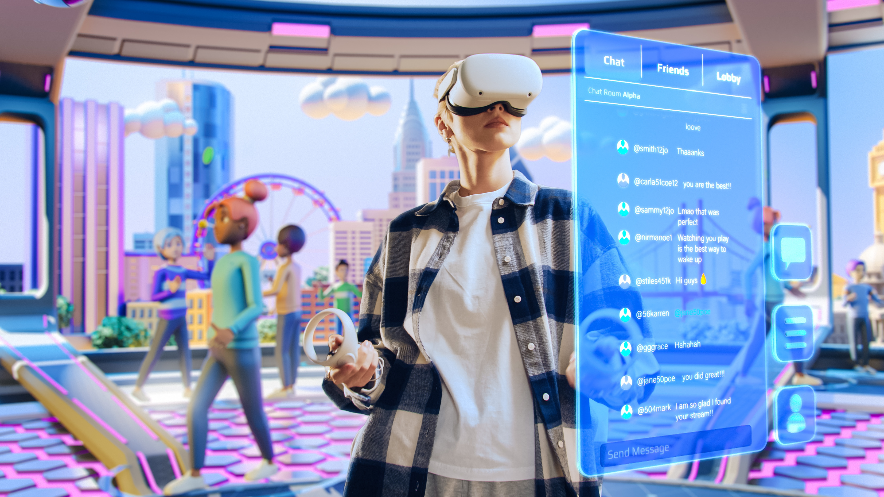
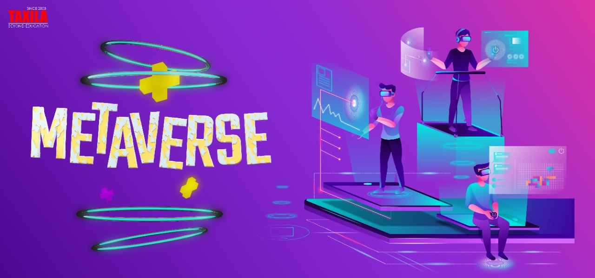
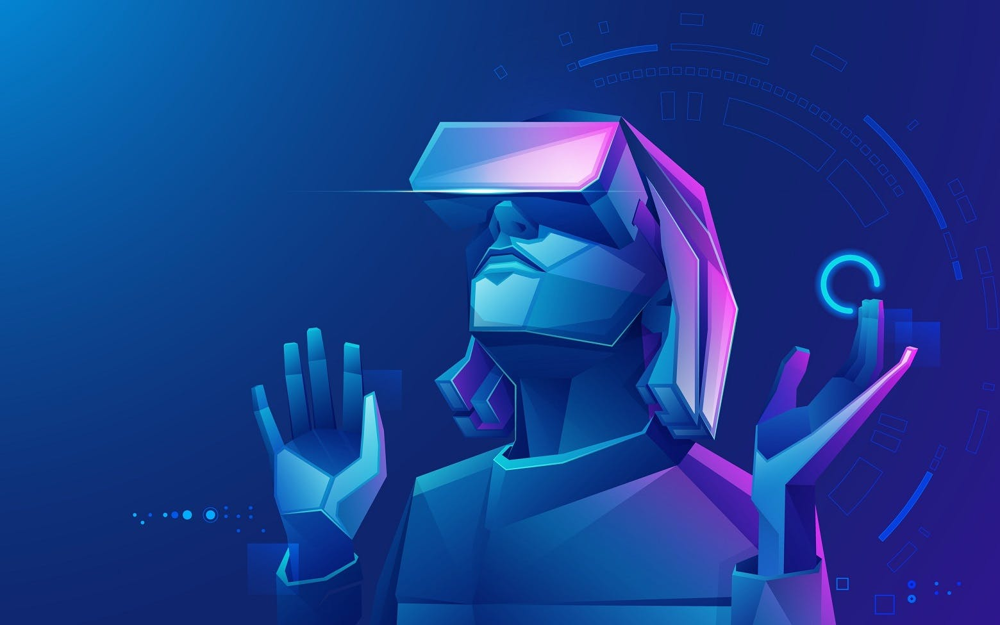
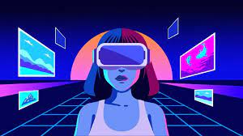
Blockchain
Blockchain is a shared, immutable ledger that facilitates the process of recording transactions and tracking assets in a business network. An asset can be tangible (a house, car, cash, land) or intangible (intellectual property, patents, copyrights, branding). Virtually anything of value can be tracked and traded on a blockchain network, reducing risk and cutting costs for all involved.
HCAI
Human-centered AI, on the other hand, is a field of artificial intelligence that is focused on creating AI systems that are designed to work alongside humans and support them in their daily lives, rather than replace them. This approach emphasizes ethical considerations, such as fairness, transparency, and accountability, and is aimed at creating AI systems that are safe, trustworthy, and beneficial to humans.
 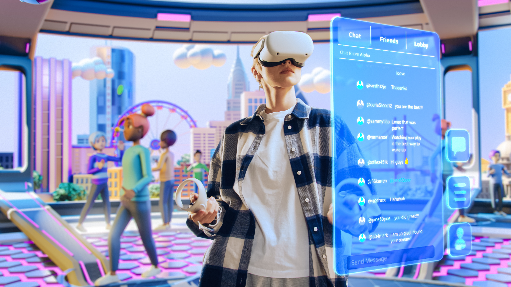
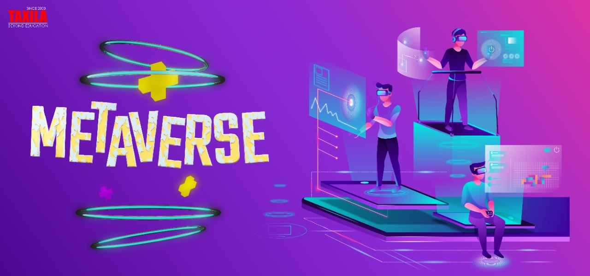
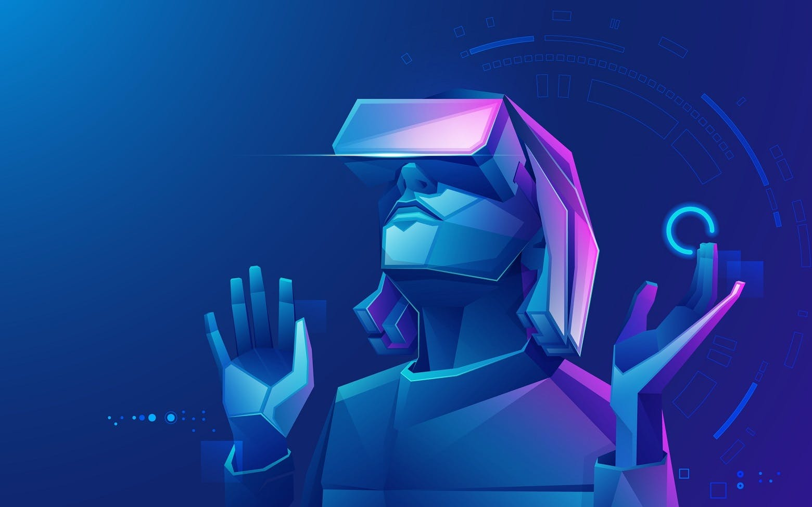
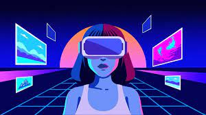
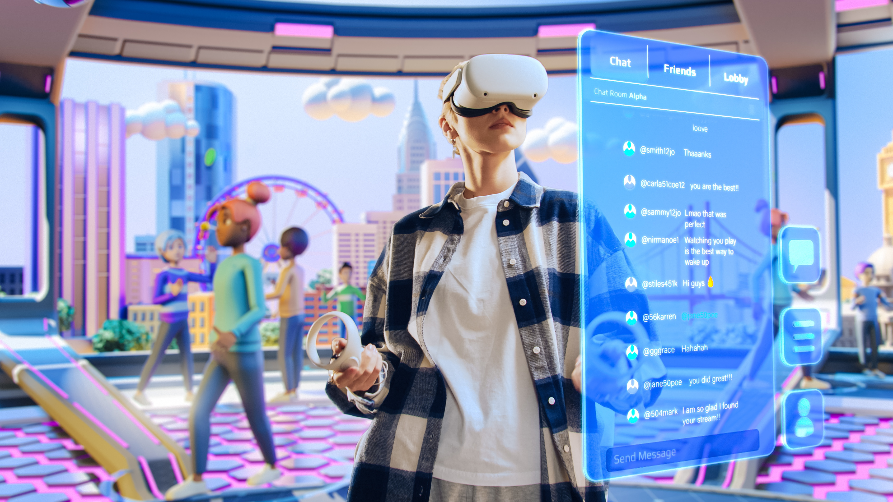
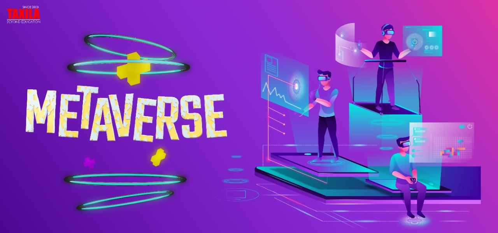
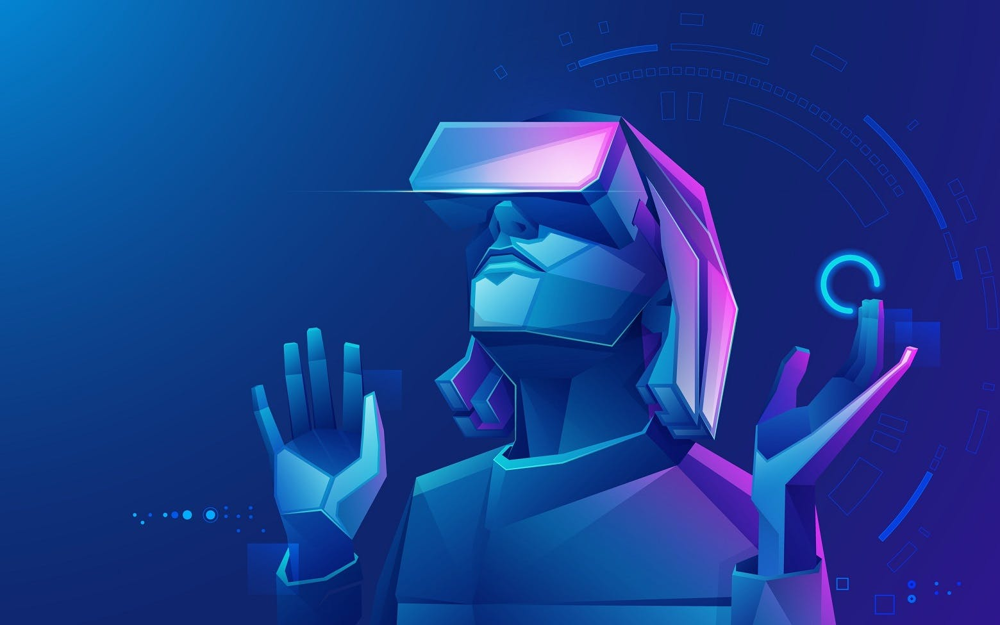
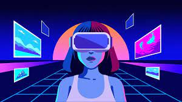


 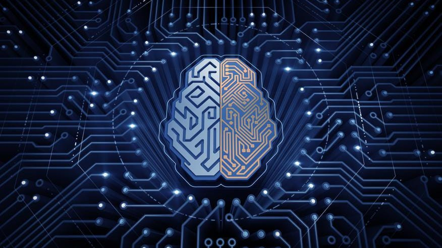
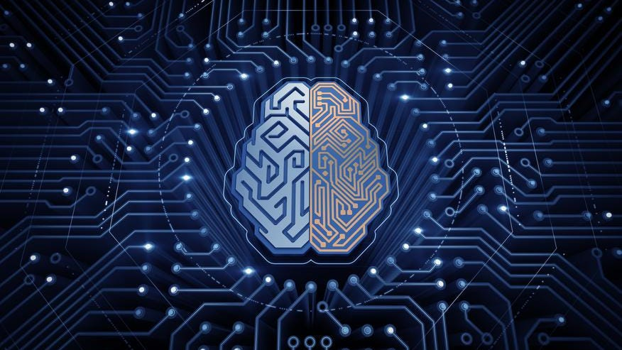